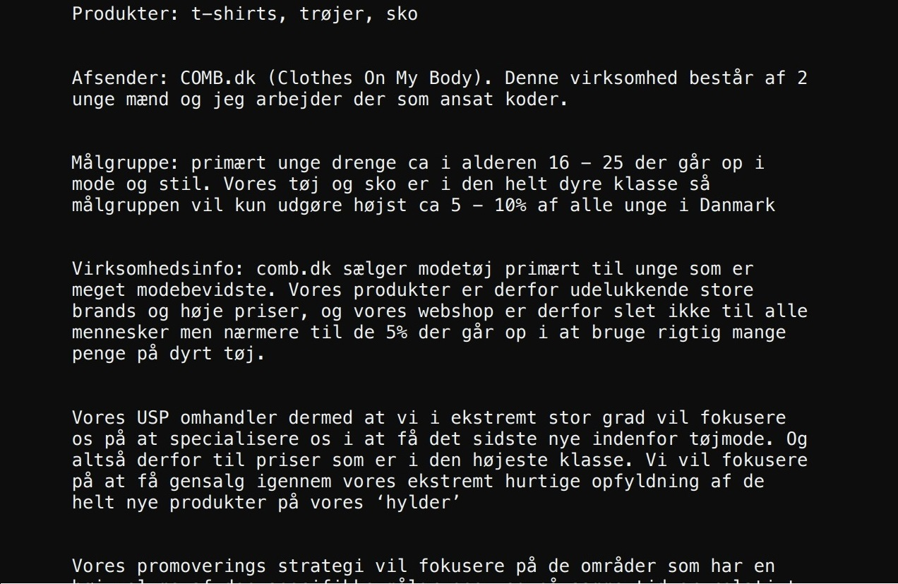
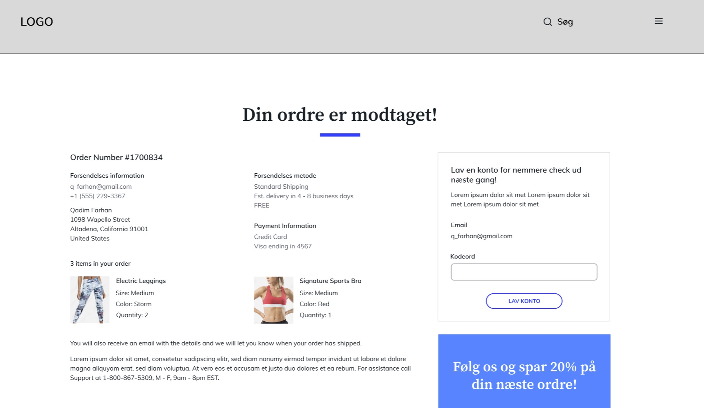

Dette tema har handlet om:
I tema 3 har vi arbejdet med UX (User Experience). Med UX lærer vi om at skabe den bedste brugeroplevelse, hvilket handler om at tænker over, hvordan hjemmesiden er struktureret, og om det er nemt at finde det man skal bruge, når man skal bruge det. Personligt er jeg ikke super glad for UX.
Hvad har vi lært:
Vi har fået indblik i, hvordan man kan strukturere en webshop helt fra forsiden og til tak-for-købet-siden. Dette giver et bedre overblik over, hvad brugeren kommer til at opleve på hjemmesiden, og dermed kan vi bruge UX til at finpudse og omstrukturere hjemmesidens design og indtryk, så den er så nem og 'flydende' at bruge som muligt.
Links:


